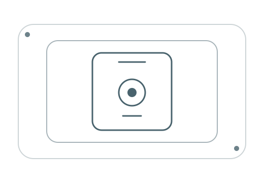

よく使う記録を、親指の近くに。
おむつ、ミルク、母乳、ねんね。迷う画面を増やさず、起きたことをすぐ残せます。
眠い時間に必要なのは、考えることを増やすアプリではありません。よく使う記録を近くに置き、あとで今日の流れが分かるようにしました。
おむつ、ミルク、母乳、ねんね。迷う画面を増やさず、起きたことをすぐ残せます。
アカウントもクラウドもありません。ローカルのデータベースに保存される、シンプルな記録です。
今日のタイムライン、まとめ、7日間と30日間の傾向。比べるためではなく、次に必要なことを知るために。
3 steps, then back to life
記録のために、生活を止めなくていいように。
クイックログを開いて、おむつ・授乳・ねんねから選びます。
ミルクは量、母乳とねんねはタイマー。メモや時刻は、あとからでも大丈夫です。
保存したらホームへ。今日の記録と、赤ちゃん自身のリズムを見られます。
入口はクイックログ。そこから、今日の流れとこの子のリズムへ自然につながります。


PRIVATE BY DEFAULT
ねんねノートはローカルのSQLiteデータベースを使います。アカウントも、ログをサーバーへ送る同期もありません。
プライバシーについて、よくある質問を見る
記録の中身と、できること・できないことを簡潔にまとめました。
はい。記録と閲覧は端末内で完結します。ネットワークを使うのは、選んで開いたサポートリンクだけです。
おむつ（おしっこ・うんち）、ミルク、母乳、ねんねを記録できます。成長の計測や「はじめて」の記録もあります。リマインダーは任意で、端末内の通知です。
ソースコードとセットアップ方法をGitHubで公開しています。ストア向けの署名済みビルドが用意できたら、このページにインストールリンクを追加します。
いいえ。表示する目安は一般的な参考情報です。心配なことは小児科にご相談ください。